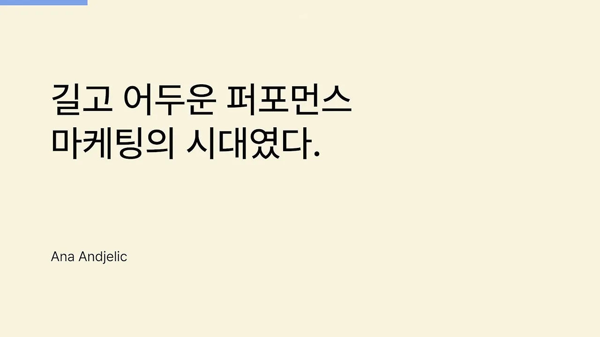
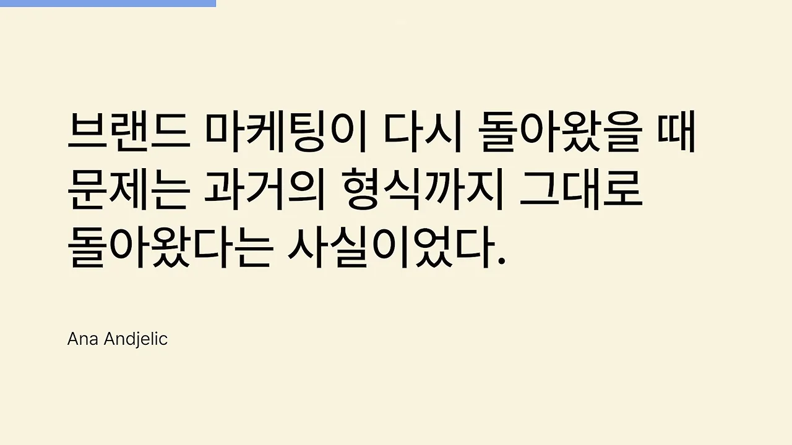
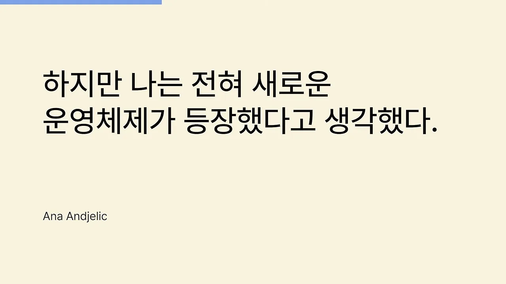
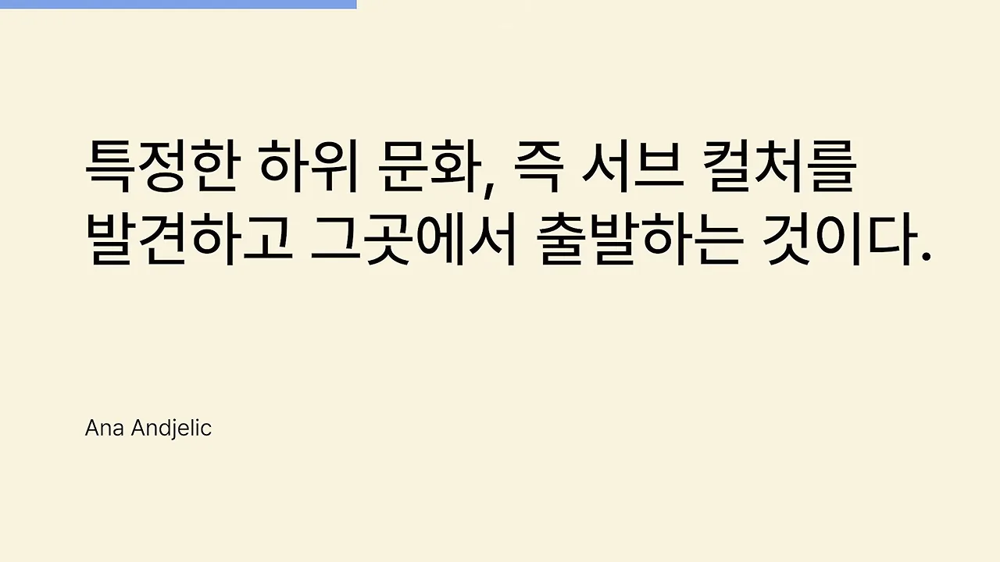
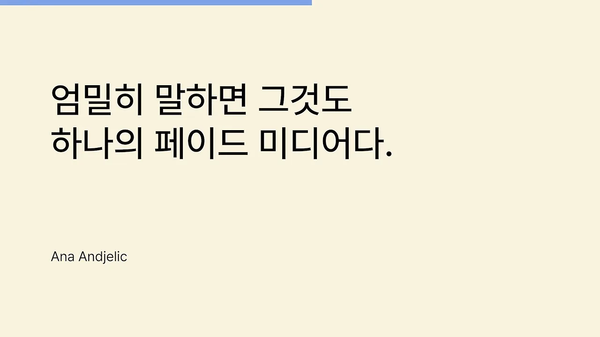
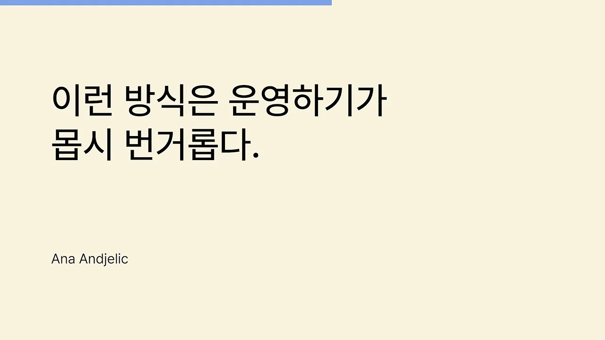
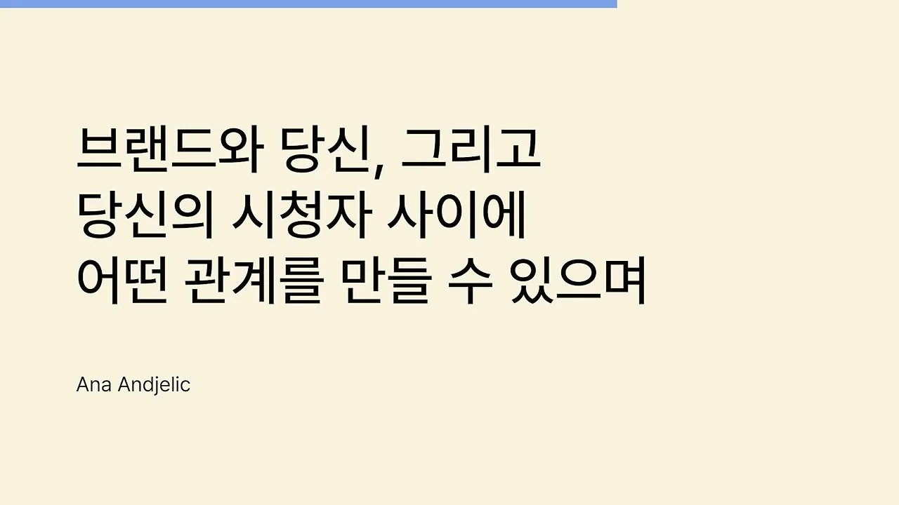

브랜드 마케팅은 왜 다시 주목받나요
아나 안젤릭은 바나나 리퍼블릭과 에스프리에서 CBO(Chief Brand Officer)를 지낸 브랜드 전문가예요. 진행자는 그가 포브스가 꼽은 마케팅 부문 최고 권위자 명단에 세 차례 올랐고, 사회학 박사라고 소개해요. 진행자는 그의 문장을 빌려 브랜드 마케팅이 어떻게 흘러왔는지부터 짚어요.
첫 인용 카드는 퍼포먼스 마케팅 시대를 이렇게 불러요. 카드 아래쪽 작은 글씨가 말한 사람 이름이에요. 영상의 인용 카드는 모두 이 모양이에요.

진행자는 '길고 어둡다'는 말은 브랜드 전문가의 개인 의견일 뿐이라고 선을 그어요. 브랜드 마케팅이 먼저 있었고, 기술이 발전하면서 퍼포먼스 마케팅이 생겼어요. 지금은 둘이 함께 있어요. 진행자가 주목하는 건 브랜드 마케팅이 다시 주목받는다는 사실이에요. 예산이 넉넉한 팀만 하던 일이 이제 스몰 비즈니스까지 내려왔어요.
왜 다시 브랜드일까요
진행자가 보는 이유는 두 갈래예요. 아래 그림의 왼쪽 줄은 시장 쪽, 오른쪽 줄은 사람 쪽 변화예요. 두 줄이 만나는 곳이 '세계관으로 나누기'예요.
flowchart TB A["공급 과잉: 같은 기능의 제품이 넘쳐요"] --> B["기능 차이만으로는 설득이 어려워요"] C["욕구가 위로 올라갔어요 (매슬로우)"] --> D["나를 대변할 브랜드를 찾아요"] B --> E["세계관을 기준으로 나눠야 해요"] D --> E E --> F["철학적 접근이 필요해요: 브랜드 마케팅이 다시 주목받아요"]
시장이 성숙해서 같은 기능을 내세우는 제품이 너무 많아졌어요. 동시에 사람들의 욕구가 다양해지고 높아졌어요. 진행자는 매슬로우의 욕구 단계를 들어, 사람들이 이제 기능에 더해 자기 자아까지 대변해 줄 브랜드를 찾는다고 설명해요. 취향과 가치관을 거침없이 드러내고, 그걸 멋지다고 보는 분위기도 그 증거예요.
자아는 사람마다 달라요. 그래서 모두에게 통하는 브랜드는 없고, 대중 브랜드라도 결국 큰 단위로라도 나눠야 해요. 이때 기준은 나이나 성별 같은 인구 통계가 아니라 그 사람이 추구하는 세계관이에요. 이런 문제는 단기 성과와 숫자 중심인 퍼포먼스 마케팅으로는 풀기 어려워요. 그래서 브랜드 마케팅이 다시 불려 나왔다는 게 진행자의 설명이에요.
옛날 방식 그대로 돌아온 브랜드 마케팅
안젤릭은 브랜드 마케팅을 다섯 가지 질문으로 정의해요. 브랜드가 무엇에 관한 것인지, 고객에게 무엇을 약속하는지, 시장에서 어떤 위치를 차지하는지, 무엇을 지향하는지, 어떤 이야기를 어떻게 전할지예요.
예전 브랜드 마케팅은 ATL(Above The Line) 방식이었어요. TV 광고, 옥외 광고, 빌보드, 라디오, 지금의 팟캐스트와 인쇄 매체로 전했어요. 먼저 브랜드 정체성과 스토리를 정하고, 정해진 채널로 위에서 아래로 알리는 구조예요. 아래 카드는 이 대목의 결론이에요.

안젤릭은 그 이유를 퍼포먼스 마케팅이 지배하는 동안 브랜드 마케팅 쪽에 혁신이 없었기 때문이라고 봐요. 웹사이트가 생기니 거기에 이야기를 쓰고, 소셜 미디어가 생기니 거기에도 브랜드 스토리를 올리자는 정도였다는 거예요.
진행자의 해설도 같은 방향이에요. 예전엔 돈만 있으면 대중 매체로 '우리 브랜드는 이런 브랜드'라는 인식을 쉽게 심을 수 있었어요. 그래서 많은 사람이 브랜드 마케팅을 곧 브랜드 광고로 기억해요. 애플의 '다르게 생각하라(Think Different)' 캠페인이 그런 예예요. ATL의 힘이 약해지자 같은 방식을 그대로 두고 올리는 곳만 SNS로 바꾼 거예요. 안젤릭은 이걸 올드 스쿨이 SNS를 쓰려는 모습, 일종의 클리셰로 봐요.
| 예전 브랜드 마케팅 | 돌아온 브랜드 마케팅 | |
|---|---|---|
| 채널 | TV, 옥외 광고, 빌보드, 라디오, 인쇄 매체 | 웹사이트, SNS |
| 방식 | 정체성과 스토리를 정해 위에서 아래로 알려요 | 똑같이 정해서 위에서 아래로 알려요 |
| 달라진 것 | 채널만 바뀌고 형식은 그대로예요 | |
진행자는 이렇게 되물어요. 홈페이지에 브랜드 스토리를 적어 둔다고 무슨 소용일까요? 창업자가 읽을 땐 멋지지만, 그게 브랜드 마케팅의 전부라면 누구나 할 수 있었을 거예요.
새 규칙: 문화 프로그램과 바텀업
안젤릭은 여기서 판을 바꿔요. 아래 카드처럼 '전혀 새로운 운영체제'가 등장했다고 말해요.

이제 브랜드는 단순히 이야기를 전달하는 것이 아니라 하나의 문화적 프로그램을 통해 이야기를 만들어 가야 한다.
— 원래 인터뷰 (이 영상 07:59 부근)
좋은 브랜드 스토리는 기본이에요. 그 위에 문화 안에서 브랜드가 맡을 역할을 정해야 해요. 고객 한 사람에게 무엇을 약속하느냐보다, 문화에 무엇을 기여하고 문화와 어떤 대화를 나누느냐가 핵심이에요.
온(On)은 어떻게 했나요
안젤릭이 드는 사례는 러닝 브랜드 온이에요.
- 나이키·아디다스와 정면으로 경쟁하지 않기로 했어요.
- 나이키가 라이프스타일, 골프, 수영으로 넓히면서 정작 러너를 위한 혁신에서 멀어진 틈을 봤어요.
- 장거리 러너라는 한 영역에 집중해 혁신했고, 러닝 행사와 전문 러닝 매장으로 들어가 그 문화 안에 깊이 자리 잡았어요.
그리고 이 원리를 한 문장으로 정리해요. 아래 카드의 '서브 컬처'가 이 영상 전체의 열쇠말이에요.

탑다운과 바텀업
진행자는 옛 방식과 새 방식을 방향으로 나눠요. 왼쪽 탑다운은 기업이 정한 메시지를 대중 매체로 한꺼번에 내려보내요. 오른쪽 바텀업은 작은 하위 문화 하나에서 팬덤을 만든 뒤 위로 넓혀 가요.
진행자의 해설은 이래요. 예전엔 대중 매체의 파급력이 커서 스토리를 알리기만 해도 '그 브랜드는 그렇구나' 하는 인식이 생겼어요. 지금 사람들은 휴대폰 속 자기 취향대로 고른 미디어와 알고리즘 안에 있어요. 광고를 한다고 마음에 들어가지 않아요. 그래서 브랜드가 한 문화에 집중해 전단지만 돌리는 게 아니라 깊이 교류해야 해요. 진행자는 이게 채널에서 다뤘던 캐즘 마케팅, 세스 고딘의 이야기와 같다고 봐요.
진행자는 온이 나이키에 제안했다가 거절당한 뒤, 자체 기술로 나이키가 소홀했던 장거리 러닝 문화에 집중했다고 덧붙여요. 갑자기 뜬 게 아니라 꾸준히 서브컬처 안에서 활동하며 커 왔다는 거예요. 길거리 농구에서 커서 나이키까지 움직이게 만든 앤드원도 비슷한 예로 들어요.
다만 탑다운이 아직 통하는 곳도 많으니 하나만 정답이라고 볼 순 없어요. 진행자가 강조하는 건 스몰 비즈니스에게 좋은 소식이라는 점이에요. TV에서 SNS로 넘어오면서 누구나 미디어를 갖게 된 것처럼, 브랜드 마케팅도 '그들만의 게임'에서 우리도 할 수 있는 게임이 됐어요.
하위 문화를 고른다는 것
진행자는 서브컬처를 흔히 떠올리는 마니아 느낌으로 보지 말고, 말 그대로 하위 문화로 진지하게 생각해 보라고 해요. 질문은 하나예요. 나는 기능적 소구만 하고 있나요, 아니면 기능과 함께 브랜드가 속한 문화가 있나요? 진행자는 이 차이가 매우 크다고 봐요. 똑같은 수제 과자라도 어떤 문화에 속할지는 창업자가 골라요.
브랜드 마케팅을 하기로 했다면, 스토리를 사이트에 올리는 데서 끝내면 안 돼요. 기획 단계부터 집중할 하위 문화를 고르고 그 사람들과 긴밀하게 교류해야 해요. 온도 지금은 러닝 문화가 꽤 커졌지만, 진행자는 특정 문화를 고른 초창기의 용기를 기억하라고 해요.
김치볶음밥 식당으로 상상해 보기
진행자가 즉석에서 든 예시예요. 그냥 김치볶음밥을 파는 식당이 아니라, '이 세상에서 플라스틱이 없어져야 한다'고 말하는 문화에 속한 식당이에요. 가운데 문화 하나를 정하자 주변의 행동이 모두 거기서 나와요.
진행자는 이 예시를 이렇게 정리해요. 특정 하위 문화에 집중한다는 건 하나의 세계관이 펼쳐지는 일이고, 그게 브랜드 마케팅의 새로운 규칙이에요.
숫자 게임 대신 문화별 포트폴리오
다음 인용은 인플루언서 행사를 겨냥해요. 안젤릭은 많은 인플루언서가 그저 게시물을 올리는 사람이라고 봐요. 브랜드가 행사를 열어 실제로 사는 건 노출과 도달 범위예요. 인플루언서 300명을 부르고 1인당 예상 노출 수를 곱하면 효과를 계산할 수 있어요. 그래서 이런 행사도 결국 페이드 미디어라고 말해요.

안젤릭은 이게 사람보다 알고리즘을 위한 거라고 봐요. 인플루언서를 몇 명 동원하고, 노출을 얼마나 만들고, 돈을 얼마나 쓰느냐의 숫자 게임이에요. 돈을 충분히 쓸 수 있으면 이 경쟁을 할 수 있어요. 그럴 수 없다면 무엇으로 경쟁할까요?
답은 세분화예요
안젤릭의 답은 고객을 어떻게 세분화하느냐예요. 하나로 묶인 대중 시장은 없고, 수많은 틈새 문화가 있어요. 그러니 집단마다 무엇을 할지 따로 고민해야 해요. 그림 오른쪽처럼 어떤 집단에는 아카이브 기획, 다른 집단에는 굿즈, 또 다른 집단에는 협업이 통할 수 있어요.
안젤릭도 이 방식이 쉽다고 하지 않아요. 아래 카드가 그 고백이에요. 바로 뒤에 '하지만 그것이 브랜드 마케팅의 미래다'라고 덧붙여요.

진행자의 해설: 흩어진 사람들
- 사람들이 뭉쳐 있다가 각자의 세상으로 흩어졌고, 세상마다 대화 방식이 달라요. 조회수가 터지는 유명 브랜드를 사랑하는 사람도, 그런 행동만 하는 브랜드를 싫어하는 사람도 있어요.
- 인플루언서 수백 명을 불러 SNS를 순식간에 시끄럽게 만들 수는 있어요. 하지만 잘 기획되지 않으면 TV를 트는 것과 같아서 잠깐 시끌시끌하다 끝나요. 어떤 사람의 알고리즘에는 몇 년째 그 소동이 뜨지도 않아요.
- 돈이 아주 많아 공격적으로 캠페인을 이어 가면 성장은 해요. 그런데 그만한 자본과 담력을 가진 팀은 드물어요.
- 남이 잘된 방식을 따라 해도 내가 고른 문화엔 안 맞을 수 있어요. 창업 일기 릴스를 좋아하는 사람도 있고, 왜 하는지 모르겠다는 사람도 있어요. 진행자는 브랜드 관점 없는 무작정 모방이 브랜드 가치를 떨어뜨린다고 확신해요.
그래서 하위 문화를 골랐다면 그 문화에 맞게 마케팅 포트폴리오를 짜야 해요. 어떻게 짤지는 그 문화가 정해요. 고른 문화를 더 깊이 이해하려고 애써야 하는 이유예요.
창업자가 공감하는 문화를 고르세요
진행자의 개인 팁이에요. 스몰 비즈니스에서는 창업자가 결정권자이자 왕이라, 아무리 팀원을 배려해도 창업자의 취향이 녹아들어요. 그러니 공감할 수 없는 하위 문화는 고르지 말고, 나를 잘 분석해서 공감할 수 있는 문화를 찾으라고 해요. 내가 이미 그 문화에 속해 있으면 그 사람들이 어떻게 소통하는지 쉽게 알 수 있어요. 진행자가 브랜드 마케팅에서 '나'라는 단어가 중요하다고 말하는 이유예요.
도달보다 관계
마지막 인용은 도달과 관계를 비교해요. 안젤릭은 몇 명에게 도달하느냐는 그렇게 중요하지 않다고 해요. 궁금한 건 그 사람들과 어떤 관계를 맺고, 그 관계가 어떤 의미를 갖느냐예요. 아래 카드는 그 관계에 등장하는 세 주체를 짚어요.

안젤릭은 이게 도달률의 문제가 아니라고 말해요. 고객의 충성도가 얼마나 깊어지는지, 멤버십과 커뮤니티로 어떤 관계를 쌓는지가 중요해요.
조회수의 쾌감은 왜 위험할까요
진행자는 이 대목을 '도달에 너무 매몰되지 말라'는 말로 읽어요. 그리고 흔한 장면을 그려요. 친구 따라 올린 콘텐츠 하나가 조회수가 터지고 구독자가 늘면, 그 순간 브랜드 마케팅을 버리고 싶어져요. 그런데 그 쾌감에 익숙해지고, 악플과 오해를 겪고, 그 반응이 실제로 브랜드에 도움이 됐는지 따져 보면 '반응만 많았지 무슨 의미였나' 하는 의문이 들어요. 진행자는 이걸 중독의 문제로 보고, 결국 균형이 중요하다고 말해요. 인지도를 높이는 건 매우 중요하지만, 그것만 생각하면 안 돼요.
관계는 어디서 생기나요
진행자의 예는 연예인이에요. 유명하다고 다 좋아하진 않아요. 어떤 연예인은 유명해도 싫고, 어떤 사람은 유명하지 않아도 좋아요. 그 차이를 만드는 게 관계예요. 아래 흐름처럼, 관계는 '나와 비슷한가'에서 시작해요.
flowchart LR A["브랜드가 하위 문화를 분명히 대변해요"] --> B["나와 비슷한 정체성이라고 느껴요"] B --> C["정서적 유대감이 생겨요"] C --> D["관계가 깊어져요"]
깊은 관계에는 정서적 유대감이 필요하고, 유대감은 나와 정체성이 비슷한 대상에게 생겨요. 그래서 브랜드가 특정 하위 문화를 분명히 대변할수록 그 가치관에 공감하는 사람과 깊은 관계를 맺기 쉬워요. 진행자는 더 직접적으로 말해요. 사람들은 그 브랜드를 좋아하는 게 아니라 자기 자신을 사랑하는 거예요.
인지도는 수학, 관계는 숙제
진행자는 인지도 게임이 수학에 가깝고 오히려 쉽다고 봐요. 빨리 익혀 두고 필요할 때 꺼내 쓰면 좋다고 해요. 어려운 건 하위 문화에 집중하고, 그 사람들과 소통하고, 그 안에서 포트폴리오를 펼치는 일이에요. 브랜드 마케팅 기획이 큰 숙제처럼 부담스럽게 느껴진다면 제대로 가고 있는 거라고 해요.
예전엔 '유명하면 브랜드'라는 말이 맞았을 수도 있어요. 지금은 보기 싫은 걸 마음껏 차단할 수 있는 세상이라, 얄팍한 접근으로는 들어갈 수 없는 공간이 있어요. 진행자가 어려운 걸 알면서도 브랜드 마케팅을 계속 말하는 이유는, 그게 스몰 비즈니스에게 강력한 차별점이 되기 때문이에요.
비판적으로 짚어 볼 세 가지와 정리
진행자는 스스로 반론 세 가지를 던지고 답해요.
| 반론 | 진행자의 답 |
|---|---|
| 인지도가 중요하지 않다는 건가요? | 아니에요. 인지도 없이 브랜드 가치만 말하는 게 더 문제예요. 인지도에만 집중하는 게 문제예요. |
| 너무 뾰족하면 고립되지 않을까요? | 맞아요. 그래서 속한 산업의 시장이 커야 해요. |
| 어렵고 오래 걸리지 않나요? | 맞아요. 가장 어려운 건 흔들리는 거고, 시간을 버틸 재정이 있어야 해요. |
시장 크기에 따라 갈려요
두 번째 반론에 대한 답이 가장 구체적이에요. 진행자는 '뻔한 것의 재창조'를 권해요. 지루하고 뻔하지만 크고, 일상에서 흔히 소비되는 산업에서 브랜드 마케팅을 하라는 거예요. 원래 작은 시장을 또 잘라 내면 정말 고립될 수 있어요.
flowchart TB
Q{"내가 속한 산업의 시장이 큰가요?"}
Q -- "커요" --> A["하위 문화로 좁히는 브랜드 마케팅
(뻔한 것의 재창조)"]
Q -- "작아요" --> B["실험을 많이 하고 확장에 집중
(다른 사람, 다른 방식, 다른 역할)"]
B --> C["그래도 브랜드 마케팅을 하고 싶다면
비즈니스 모델을 바꿔 키울 계획부터"]
진행자 자신이 작은 시장의 마케터라면, 같은 제품을 다른 사람에게 다른 방식으로 팔 수 있는지, 제품이 다른 역할을 할 수는 없는지를 더 살펴보겠다고 해요. 브랜드 마케팅이 재밌어서 하고 싶은데 비즈니스가 작다면, 아쉽지만 브랜드 마케팅 공부는 권하지 않는다고까지 말해요.
흔들림과 시간
세 번째 반론에서 진행자가 꼽는 가장 큰 어려움은 흔들림이에요. 관점을 세우고 하위 문화를 섬기겠다고 기획해도, 출시하고 마케팅하다 보면 누가 얼마 만에 잘됐다는 소문에 반드시 흔들려요. 진행자는 '모두 각자의 이야기를 쓰는 거지, 남이 흥하든 망하든 나와 상관없다'는 마음으로 버틴다고 해요.
또 하나는 시간이에요. 그래서 재정이 급한 사람은 브랜드 마케팅을 보면 안 된다고 해요. 이 게임은 재정이 넉넉한 쪽이 오래 버티고 이기기 때문이에요. 진행자는 이걸 『마케팅 불변의 법칙』 마지막에 나오는 '재원의 법칙'에 빗대요. 대부분은 이 현실을 알고 그만두고, 빠르게 조회수를 터뜨려 몇 개 더 파는 쪽을 택한다고 해요. 진행자는 브랜드 마케팅이 모두에게 필수는 아니지만, 꼭 맞는 사람이 있다고 말해요.
영상의 정리
- 브랜드 마케팅은 다시 중요해졌지만, 올드 스쿨 방식이 아니라 하위 문화에서 대중문화로 커 가는 바텀업을 기억해야 해요.
- 사람들이 흩어져서 절대적인 마케팅 포트폴리오는 없어요. 고른 문화를 깊이 분석하고, 그 문화의 언어로 포트폴리오를 짜야 해요.
- 규모가 작다면 창업자의 정체성을 바탕으로 공감할 수 있는 문화를 골라요.
- 인지도와 함께 관계를 챙겨요. 관계는 '이 브랜드가 내 자아를 대변하는가'에서 오는 유대감이에요.
어차피 브랜드 마케팅을 선택하실 분이라면요. 내 브랜드로 싸워 보세요.
— 영상 32:57
진행자는 지금의 브랜드 마케팅이 복잡해 보여도, 한마디로 줄이면 얼마나 자기 자신을 알고 표현할 수 있느냐라고 맺어요.